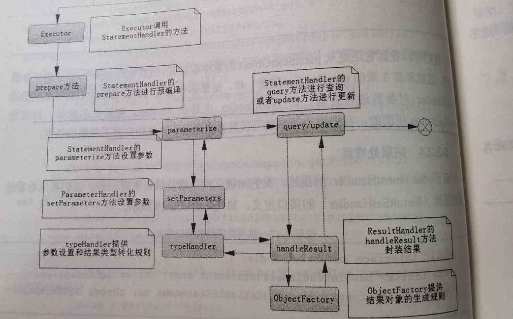

MyBatis基础
MyBatis与JPA(Hibernate)的区别
相同点：都是ORM(Object Relational Mapping)，将数据库的表和简单Java对象的映射关系模型。
- Hibernate优点:Spring Boot封装的JPA框架实际上就是使用Hibernate,Hibernate的好处是明显的，开发简单，不需要接触到SQL，全自动
- Hibernate缺点：Java对象全映射，耗费大量的资源，不支持存储过程，无法根据实际情况自行组装SQL语句
- MyBatis：Java映射关系自定义，解决Java对象全映射。能够接触到底层SQL
目前Spring Boot集成的MyBatis版本为MyBatis 3，具体版本已经更新到最新。
配置
application.yml
|
|
mybatis-config.xml
|
|
映射器
使用自增列
|
|
sql元素
|
|
resultMap映射集合
|
|
一对多，一对一的关系，建议超过3层关联时，尽量少用级联。
延迟加载
一开始并不取出级联数据，只有当使用它了才发送SQL去取回数据。
实现原理：通过动态代理来实现，在默认情况下，MyBatis在3.3或者以上版本时，是采用Javaassist的动态代理，低版本使用CGLIB。它会生成一个动态代理对象，里面保存着相关的SQL和参数，一旦我们使用这个代理对象的方法，它会进去到动态代理对象的代理方法里，方法里面会通过发送SQL和参数，就可以把对应的结果从数据库里面查找回来。
- 立即加载：多条SQL一次性发送
- 延迟加载; 一条一条发送，按需发送
有两个配置：
- lazyLoadingEnabled:是否开启延迟加载功能
- aggressiveLazyLoading:如果为true的时候，表示按照层级加载，如果为false的，表示按需加载
对于每条SQL，都可以配置是否进行延迟加载。
- eager：立即加载
- lazy：延迟加载
缓存cache
缓存分为一级缓存和二级缓存
- 一级缓存：sqlsession层面的，相同的sqlsession，执行相同的sql的话，会进行缓存，第二次查询的结果不进行查询，直接返回缓存中的数据给客户
- 二级缓存：sqlsessionFactory层面，一个sqlsessionFactory中的所有的数据都会进行缓存，默认是不开启的，采用的是LRU（最近最少使用原则）来进行缓存管理，可以将二级缓存保存到远端的redis等缓存介质中。
Mybatis默认是开启一级缓存的
关闭一级缓存的方式
- 全局配置：设置mybatis.configuration.local-cache-scope=statement
- 指定 mapper 关闭：在
mapper.xml的指定 statement 上标注flushCache="true"
MyBatis解析和运行原理

MyBatis的初始化分为两部分：
第一部分为SqlSessionFactory的初始化
- 首先，Configuration类用来读取配置参数等
- 通过SqlSessionFactoryBuilder类，使用构造器模式，来进行SqlSessionFactory的初始化
第二部分为SqlSession的初始化和执行。
SqlSession是SqlSessionFactory初始化出来的，执行的过程依赖于四大组件。
四大组件：
- Executor:是执行SQL的全过程，包括组装参数，组装结果集返回和执行SQL 过程，都可以拦截，较为广泛
- StatementHandle:执行SQL的过程，可以重写SQL的过程，是最常用的拦截对象
- ParameterHandle:拦截执行SQL的参数组装，可以重写组装参数规则
- ResultSetHandle:用于拦截执行结果的组装，可以重写组装结果的规则。
插件
而插件也依赖于四大组件，插件有几步：
- 确定需要拦截的签名
- 实现拦截方法
- 组件的初始化
|
|
插件也是使用责任链模式来进行操作的。重要的对象如MetaObject：可以有效读取或者修改一些重要对象的属性。